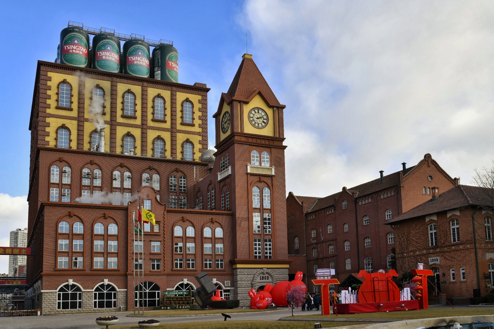
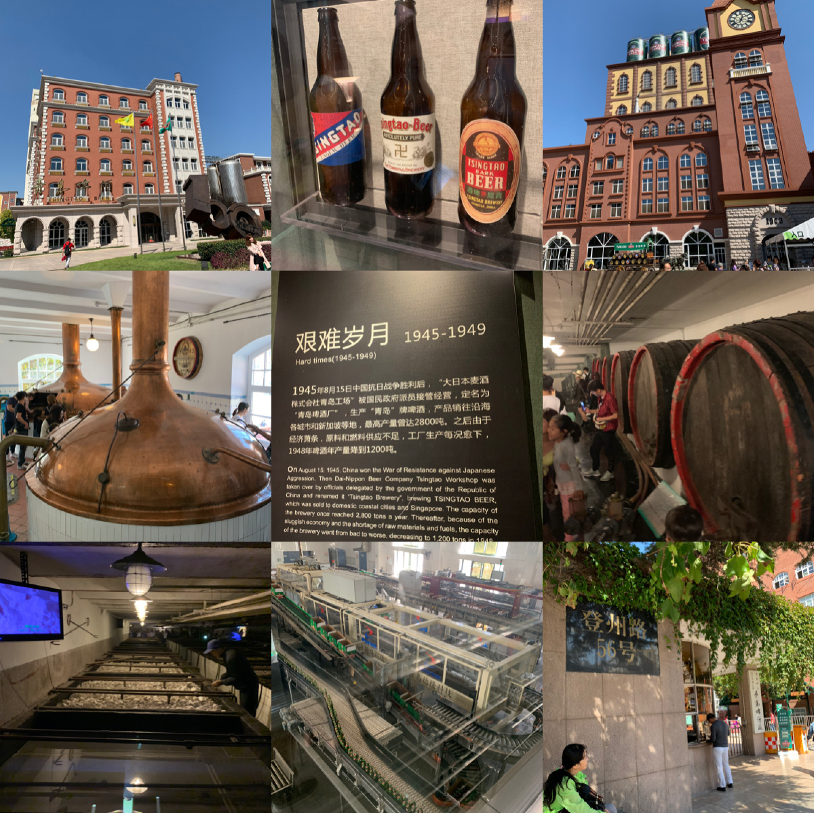

Introduction
一座城市的味觉记忆
青岛啤酒博物馆，坐落于市北区登州路56号，是在1903年建厂的青岛啤酒厂旧址上改建而成的专题博物馆。这座建筑本身就是历史的见证——红砖尖顶的德式厂房，历经百年风雨依然矗立，弥漫着麦芽与啤酒花的芬芳。
1903年，英德商人在青岛创办了「日耳曼啤酒公司青岛股份公司」，这便是青岛啤酒的前身。当时的酿造设备全部从德国运来，采用德国纯净酿造法，产出的啤酒很快便风靡远东。如今，这些百年前的铜制糖化锅、发酵罐仍原封不动地陈列在馆内，锈迹斑斑的金属表面写满了时间的沉淀。
博物馆分为A馆和B馆。A馆通过历史图片、实物展品和影像资料，讲述青岛啤酒从殖民时期到现代的发展历程；B馆则还原了老厂房的酿造车间，游客可以近距离观看啤酒生产的完整流程——从麦芽粉碎、糖化、发酵到灌装。最令人兴奋的是，参观结束后可以在品酒区喝到一杯刚从生产线上取出的原浆啤酒，泡沫细腻，麦香浓郁，是任何瓶装啤酒都无法比拟的鲜活口感。
走出博物馆，就是热闹的登州路啤酒街。这条街上聚集了几十家海鲜大排档和啤酒屋，傍晚时分灯火通明，炭烤海鲜的烟火气与啤酒的麦香交织在一起，构成青岛最接地气的夜生活场景。
Visitor Info
Gallery
百年酿造时光


Tips
游玩建议
博物馆门票包含一杯原浆啤酒和一杯纯生啤酒。原浆啤酒未经杀菌过滤，保留了活酵母，口感醇厚鲜活，是在外面喝不到的博物馆限定体验。建议先喝原浆，再品纯生，感受风味的层次变化。
A馆偏重历史人文，展出青啤百年发展史和老照片；B馆是酿造工艺线，可以看到真实的糖化车间和灌装流水线。建议先A后B，从历史到工艺的顺序体验最流畅。
参观结束后步行即到登州路啤酒街。推荐搭配：辣炒蛤蜊 + 烤鱿鱼 + 一扎生啤。夏夜坐在户外摊位，吹着海风喝啤酒，是青岛最正宗的夏日打开方式。
博物馆出口处有文创商店，可以买到青岛啤酒限定周边——迷你酒桶、复古瓶装酒、啤酒巧克力等。特别推荐啤酒酵母面包，是博物馆独有的创意食品。